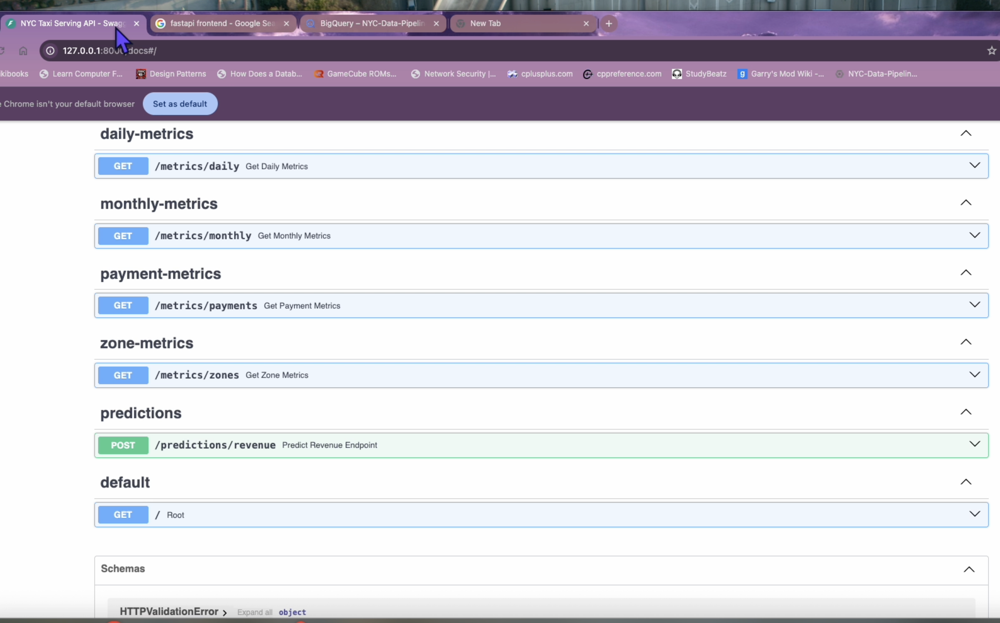

Running & Fitness

Running and fitness are important hobbies for me. I enjoy exercising and played sports in high school.
Recently running has given me measurable goals to work toward and provides
another area outside of technology where consistency and
incremental improvement challenge me.
One day I hope to workout at Diamond Gym with these guys they're pretty intense and like to lift heavy like me.
Diamond Gym
.
Programming

Programming is both part of my career and one of my personal
interests. I enjoy creating software projects, experimenting
with new technologies, and learning different approaches to
solving technical problems.
Some of my projects involve Python, C#, SQL, data engineering,
artificial intelligence, web development, and automation.
Building projects outside of work gives me an opportunity to
experiment with technologies that I may later use professionally.
I've included a project image of a recent data pipeline I built that analyzes millions of rows of data.
More on that project
here
Here is my github that has a lot of my projects.
GitHub
projects.